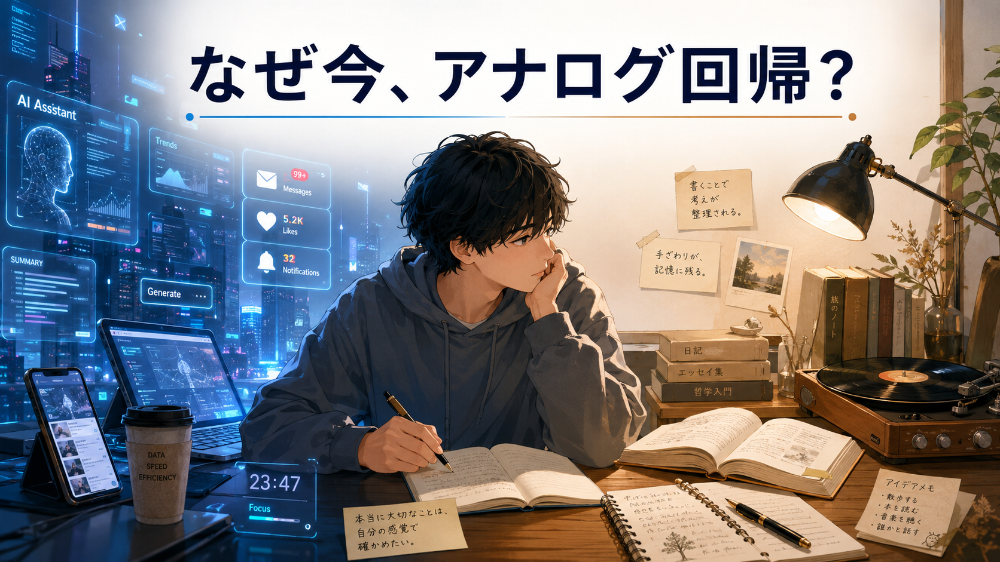
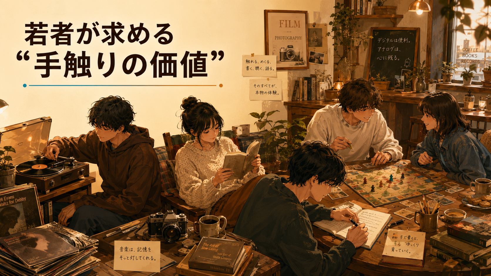
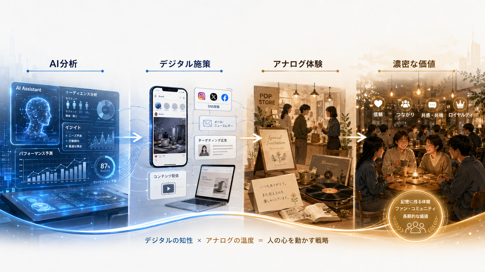

なぜ今、アナログ回帰なのか
AIやスマホ、効率化が進みすぎた反動として、若者がアナログに目を向ける流れを導入として整理しました。
Learning Log｜2026.07.11
完成した画像を観察し、主役・シーン・雰囲気・色味・スタイル・構図・用途に分解しながら、 画像生成プロンプトの感覚をつかむ練習方法を記録します。
Codexへ戻るBackground
Z世代を中心にアナログ回帰が起きている、という記事を読みました。 AIによる効率化やスピード社会が進む一方で、本やレコード、手書き、対面の時間など、 手触りのあるアナログ体験があらためて価値として見直されている、という内容でした。
そこから、AI時代のビジネス戦略として、デジタルだけで完結するのではなく、 リアルな体験やオフラインの人間関係を組み合わせた体験型サービスが増えていくのかもしれないと感じました。
ChatGPT Dialogue
この記事の要約を3枚のスライドにするならどう分けるとよいかをChatGPTに相談し、 「なぜ今、アナログ回帰なのか」「若者が求める手触りの価値」「AI時代の戦略ヒント」 という3つのテーマに整理してもらいました。
AIやスマホ、効率化が進みすぎた反動として、若者がアナログに目を向ける流れを導入として整理しました。
レコード、紙の本、手書き、対面の会話など、五感で感じられる体験の価値を具体例として整理しました。
AIやデジタル施策に、リアルな体験や人間関係を組み合わせるビジネス戦略として整理しました。
Reverse Prompt Practice
その後、それぞれのテーマに合わせて画像を生成してもらったところ、イメージに近いビジュアルができました。 そこで今度は逆に、「この画像を作るなら、どんなプロンプトになるのか」という視点で画像を見直し、 Lesson11のプロンプトフォーマットに沿って、主役、シーン、雰囲気、色味、スタイル、構図、用途に分けて 要素を書き起こしてもらいました。
この対話の流れの中で思いついたのが、「逆算プロンプト練習」です。 先に完成した画像を観察し、そこからプロンプトの要素を分解していくことで、 画像生成の感覚を少しずつつかめるのではないかと感じました。
プロンプトをいきなり書くのではなく、完成画像を読むことで、画像生成の指示に必要な要素を観察できるようになる。
画像は、ただ見るだけじゃなくて、分解して読むこともできるワン。完成画像は、プロンプトの化石みたいなものだワン！
Practice Template
いいなと思った画像、使いたい雰囲気の画像を選びます。
何が主役か、どんな場面か、どんな感情や雰囲気があるかを見ます。
主役、シーン、雰囲気、色味、スタイル、構図、用途に分けて書き出します。
逆算したプロンプトで画像を作り、元画像との違いや足りなかった情報を確認します。
Related Visual
Lesson11のプロンプトフォーマットを学びながら、完成画像から要素を読み取る練習を表す関連画像です。

Slides and Prompts
スライド画像と、それぞれの生成プロンプトを折りたたみで残します。 画像ファイルはGitHubにアップロードして、同じファイル名で参照します。
3枚スライドは以下のファイル名で管理します。



以下のテーマと各要素をもとに画像を生成してください。
【テーマ】
AI時代に起きる若者のアナログ回帰
【要素】
## 主役
AIやスマートフォンに囲まれた若者と、その横に置かれた紙の本、ノート、レコード、手書きメモなどのアナログアイテム。デジタル社会の速さと、アナログへの静かな回帰を象徴するビジュアル。
## シーン
近未来的なデスクや部屋の中で、スマホやAI画面から少し距離を置き、若者が紙の本やノートに目を向けている。背景には情報が流れるデジタル画面があり、手元には温かみのあるアナログ道具がある。
## 雰囲気・感情
デジタル疲れ、少しの戸惑い、でも静かな安心感がある。効率化やスピード社会から一歩離れて、自分の感覚を取り戻していく雰囲気。
## 色味
青系・シアン系のデジタル感に、紙や木目のベージュ・暖色を少し加える。冷たいデジタルと温かいアナログの対比が伝わる色味。
## スタイル
教育系スライド向けのデジタルイラスト。近未来感とアナログ感が共存する、見やすく整理されたビジュアル。
## カメラ・構図
横長16:9。左側にデジタル画面やAI・スマホの要素、右側に本やノートなどのアナログ要素を配置。中央に若者を置き、左右の対比がひと目で分かる構図。上部にタイトルを入れやすい余白を作る。
## 用途
3枚スライドの1枚目。テーマ導入用。タイトル「なぜ今、アナログ回帰？」を入れるための表紙ビジュアル。以下のテーマと各要素をもとに画像を生成してください。
【テーマ】
若者が求める手触りのあるアナログ体験
【要素】
## 主役
Z世代の若者たちと、レコード、紙の本、手書きノート、ボードゲーム、フィルムカメラ、対面の会話など、五感で感じられるアナログ体験。
## シーン
カフェや部屋のような落ち着いた空間で、若者たちがスマホから離れ、レコードを聴いたり、紙の本を読んだり、ボードゲームを楽しんだり、手書きでメモを取ったりしている。オフラインの人間関係やリアルな体験が伝わる場面。
## 雰囲気・感情
あたたかい、安心感がある、ゆっくりした時間、親密さ、楽しさ。AI生成コンテンツがあふれる時代だからこそ、本物の体験が贅沢に感じられる雰囲気。
## 色味
暖色系、ベージュ、ブラウン、やわらかいオレンジ。少しレトロで落ち着いた色味。デジタル画面の青は控えめにする。
## スタイル
ポスター風または雑誌風のデジタルイラスト。レトロ感と現代的な洗練さがある、Instagramや学習スライドに使いやすいビジュアル。
## カメラ・構図
横長16:9。中央に若者たちのオフライン体験を配置し、周囲にレコード、本、手書きメモ、ボードゲームなどを自然に散りばめる。タイトルや短いキーワードを入れやすい余白を上部または左側に作る。
## 用途
3枚スライドの2枚目。具体例紹介用。タイトル「若者が求める“手触りの価値”」を入れるための中盤ビジュアル。以下のテーマと各要素をもとに画像を生成してください。
【テーマ】
AI時代のビジネス戦略としてのアナログ体験
【要素】
## 主役
AI・デジタル技術と、リアルなアナログ体験を組み合わせた新しい戦略。オンラインとオフライン、効率と体験価値がつながっていることを象徴するビジュアル。
## シーン
未来的な戦略ボードやビジネス会議のような空間で、AI分析画面、SNS、デジタルマーケティングの要素と、ポップアップイベント、紙の招待状、手書きカード、実店舗体験、レコードや本などのアナログ要素がひとつの流れとして整理されている。
## 雰囲気・感情
前向き、戦略的、知的、実用的。デジタルだけに偏らず、リアルな体験や人間関係を価値として設計していく印象。
## 色味
青と白を基調に、アクセントとして暖色やゴールドを少し入れる。AI時代の知的さと、アナログ体験の温かさが両方伝わる色味。
## スタイル
インフォグラフィック風のデジタルイラスト。教育系・ビジネス系スライドに合う、整理された見やすい図解ビジュアル。
## カメラ・構図
横長16:9。左から右へ「AI分析 → デジタル施策 → アナログ体験 → 濃密な価値」という流れが見える構図。矢印や線でつながりを表現し、4つの要素を均等に配置する。余白を多めに取り、文字を後から入れやすくする。
## 用途
3枚スライドの3枚目。まとめ・戦略提案用。タイトル「AI時代の戦略ヒント」を入れるための締めビジュアル。Research Result
完成画像を観察し、要素を分解することで、次にどんな指示を出せばよいかを少しずつつかめるようになると感じました。